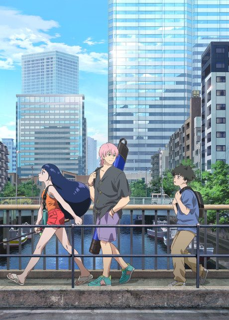

Anime2024 · Drama, Slice of Life, Sports
Negative Positive Angler
ネガポジアングラー
AniList7.3
Animeter—
Episodes12 ep
MangaOriginal
Is there a manga to continue?
StatusOriginal
An anime original, so there is no manga to pick up from.
Sources: AniList, MyAnimeList